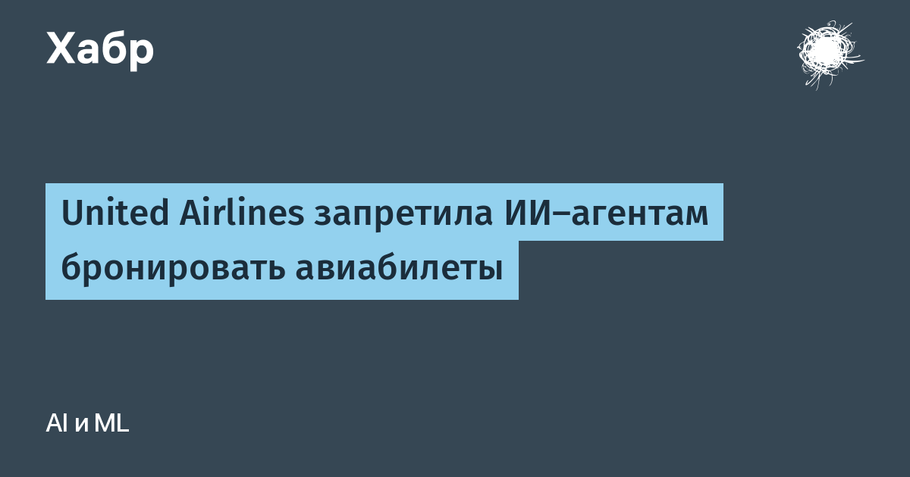

United Airlines стала первой американской авиакомпанией, официально закрывшей путь ИИ-агентам к бронированию. Компания объявила, что ограничивает доступ несанкционированных сторонних ИИ-помощников — как напрямую на своих сайтах и в приложениях, так и через туристические агентства и агрегаторы. Правила бронирования и оформления билетов сейчас обновляются, чтобы закрепить запрет. Сам факт позиции закреплен в разделе Digital Trust Center на сайте авиакомпании.
Для оформления билета агенту нужны персональные и платёжные данные пользователя — в United считают передачу учётных данных сторонним ИИ-помощникам неприемлемой: это путь к утечкам, непреднамеренным покупкам, несанкционированным изменениям в аккаунте и несанкционированному расходованию бонусных миль MileagePlus. Второй аргумент — федеральные нормы: например, по правилам при регистрации на рейс пассажир обязан лично подтвердить отсутствие запрещённых предметов в багаже, а действие ИИ-инструмента это подтверждение обесценивает.
Как уточнил Wall Street Journal, показывать варианты рейсов и цены ИИ-агентам по-прежнему можно — нельзя совершать транзакцию на сайте перевозчика. Обычные агрегаторы (Kayak, Hopper, Google Flights) продолжают работать. Авиационный аналитик Генри Хартевельдт из Atmosphere Research Group считает, что авиакомпания просто не хочет платить за резко выросший трафик поисковых запросов от ИИ-ботов и не желает появления ещё одного, потенциально гораздо более мощного посредника поверх поисковиков и турагентств.
Подход не всеобщий: Southwest Airlines, наоборот, пустила пользователей ChatGPT к просмотру информации о своих рейсах, а Delta недавно признала, что использует динамическое ценообразование на базе ИИ (хотя и отрекла, что не строит индивидуальные цены на персональных данных). Получается, единой линии у авиации нет: кто-то агрегатирует агентов, а кто-то отрезает.
Это первый случай, когда крупный перевозчик формализовал статус ИИ-агента не как «юзер-агента с плагином», а как отдельную категорию, которой нужен явный допуск. По мере роста агентного коммерции — оплаты, покупок, путешествий «по поручению» — кейс United, похоже, станет образцом для других отраслей с регулируемыми операциями.